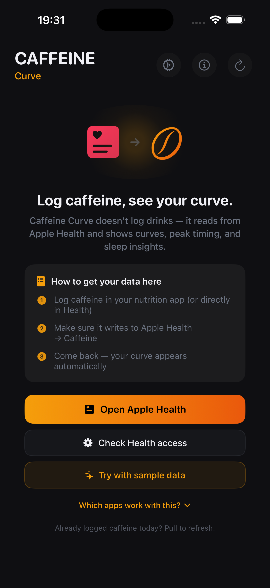
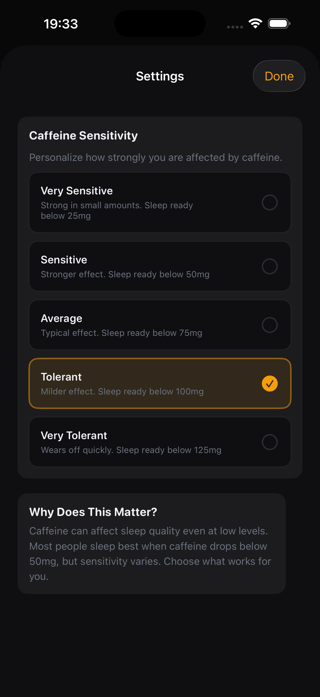
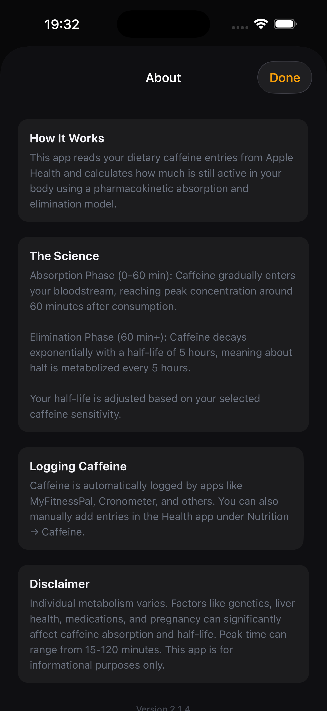

Caffeine Curve reads your dietary entries from Apple Health and uses an absorption + elimination model to estimate how much caffeine is still active right now — so you can decide on another coffee, hit your focus peak, or stop in time for sleep.
Caffeine Curve doesn't ask you to log drinks. It reads what's already in Apple Health and runs the math for you using a pharmacokinetic absorption & elimination model.
Use any tracker that writes to Health — MyFitnessPal, Cronometer, others — or add it manually under Nutrition → Caffeine.
Caffeine Curve estimates absorption (0–60 min) and elimination (~5h half-life), tuned to your sensitivity profile.
Open the app, glance at your watch face, or peek at the Lock Screen widget. See peak time and when you're sleep-ready.
Real-time mg active, with trend arrow showing whether you're rising or falling.
See the full curve of your day — past, present, and projected future levels.
Know when your coffee hits hardest, and the exact time you'll drop below your sleep threshold.
Real-time gauge, clearance estimate, and freshness indicator — right on your wrist.
Gauges, trend chart, sleep-clear time. Small, medium, large — pick your scale.
A ping at peak. A ping when you're cleared for sleep. Nothing else.
From Very Sensitive to Very Tolerant — match the model to your body chemistry.
Explore the full app populated with sample data before logging a single thing.
Rectangular and dial-top complications show your peak time or sleep-ready time at a glance.



Caffeine Curve doesn't have a server because it doesn't need one. Settings stay on your phone. Your caffeine data stays in Apple Health.
A premium visual refresh, peak & sleep alerts, richer Watch complications, and a freshness indicator so you always know when your watch last synced.
See full release notesPeak alerts when your caffeine maxes out. Sleep-ready alerts when you drop below threshold.
Cards, buttons, and badges across iPhone & Watch get a premium native finish. New tinted icons.
Rectangular & dial-top complications show exact peak / sleep-ready times. Plus a freshness indicator.
Free. No ads. No in-app purchases. Built from a real daily need.